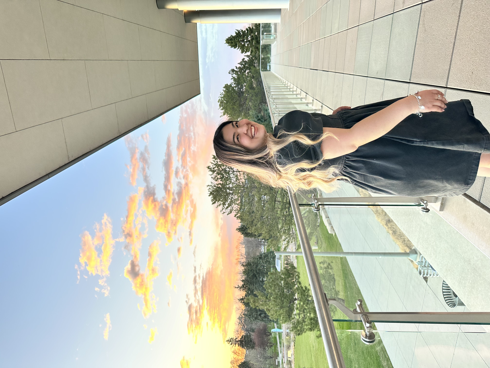

Student | Computer Scientist | Software Engineer
Thank you for visiting my corner of the internet! I'm truly grateful for your presence here. This space is a reflection of my journey, experiences, and passions. Whether you're here out of curiosity, to learn more about me, or simply to explore, you are most welcome. Feel free to browse through the pages and discover the facets of my life as a student, computer scientist, software engineer, just a girl in this world! Your support means the world to me. Welcome to my digital home, and I hope you find something inspiring and enjoyable during your stay.
I am a 4th year student at Colorado State University, majoring in Computer Science with a concentration in Networks and Security as well as Pre-Medicine. I love working to improve our community and helping to make the world a healthier and safer place. I enjoy having a change of pace in my life and easily adapting to new environments!
A Little More About Me: I am from a small bordertown in Texas called Eagle Pass! I was born and raised by my amazing parents just 2 minutes from Mexico. I am a native Spanish speaker and love all things about my Mexican heritage. My sister, Shania, is my best friend, along with my two fur babies, Oakley and Lady. I grew up playing the lovely sport of softball, and have now found a new passion in Computer Science. Welcome to my page!
Welcome to my portfolio! Here I provide a short summary of my Computer Science skills, ranging from the many languages and softwares I have learned throughout my education and work experiences to the many classes I have taken at Colorado State University.
Languages:
Software:
Other Skills: Teamwork, Communication, Bilingual (English, Spanish), Punctuality, Interpersonal Skills
Relevent Education:
Relevent Work:
Let's get in touch! I'm thrilled to connect with you. Whether you have questions, want to collaborate, or just share your thoughts, feel free to reach out. Your messages are like rays of sunshine brightening my day. I'm looking forward to hearing from you and starting a wonderful conversation. Let's make this interaction the beginning of something amazing!
Fort Collins, Colorado, US
Phone: (830)968-5827
Email: leeanndunn.23@gmail.com
LinkedIn: linkedin.com/in/lee-ann-dunn-5453691b8